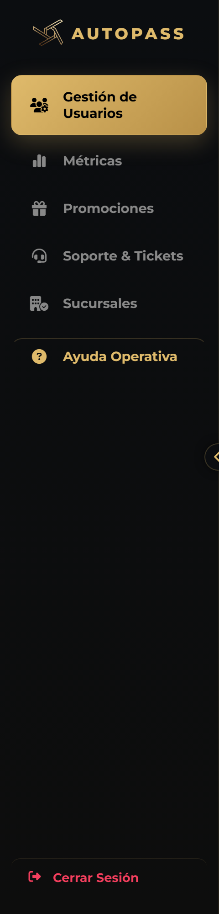
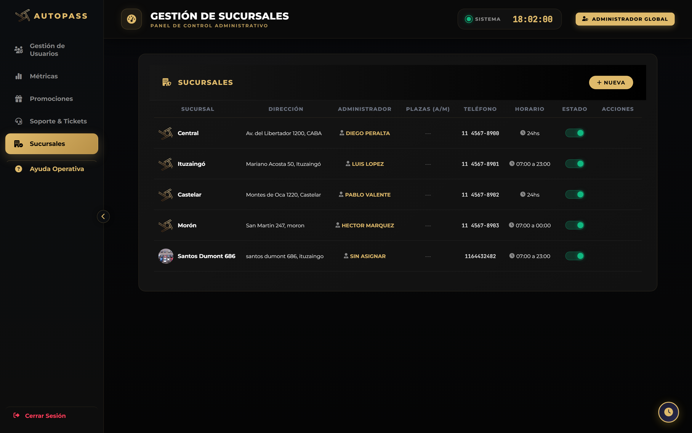
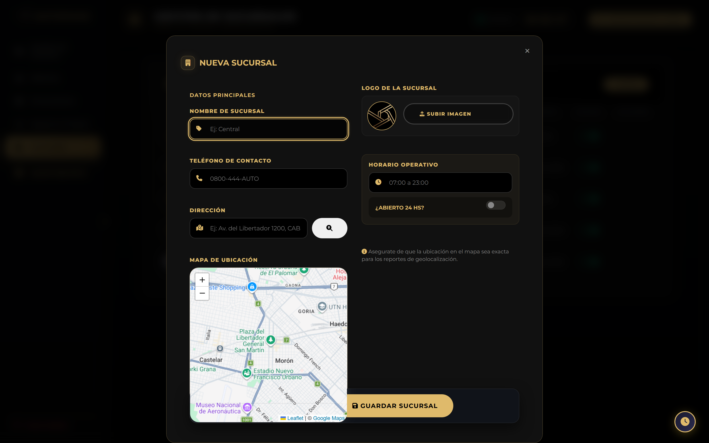
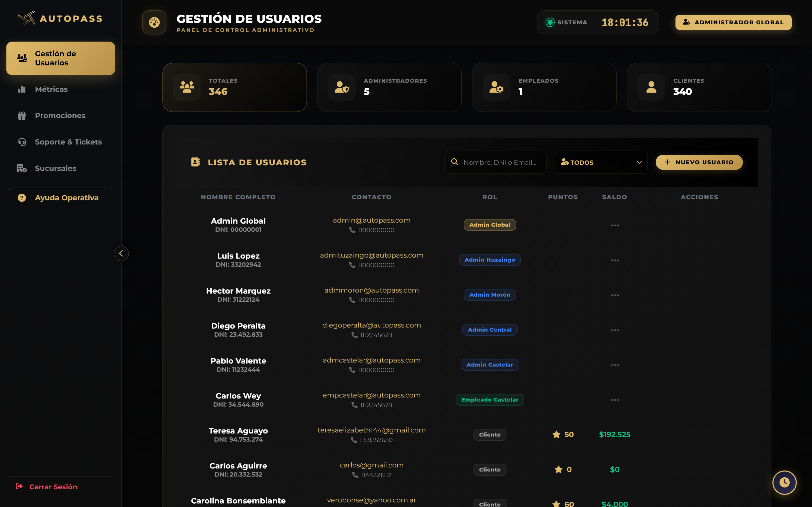
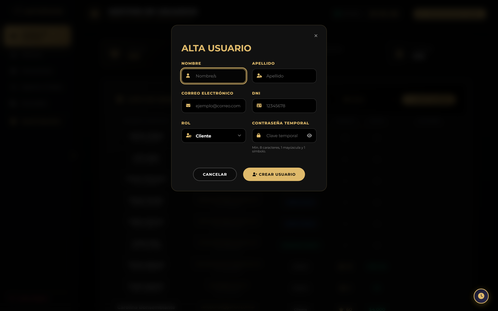
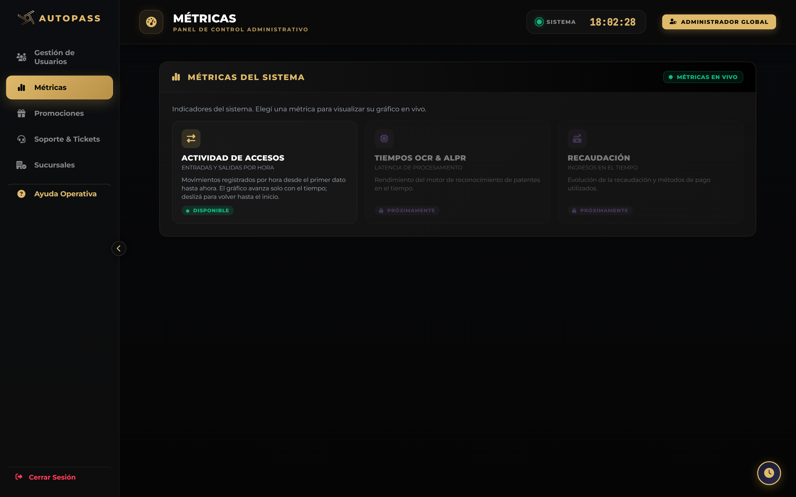
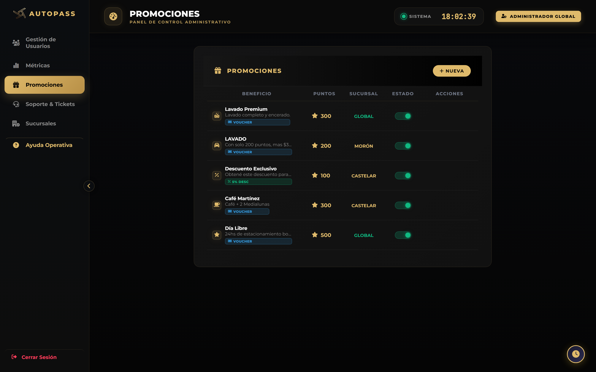
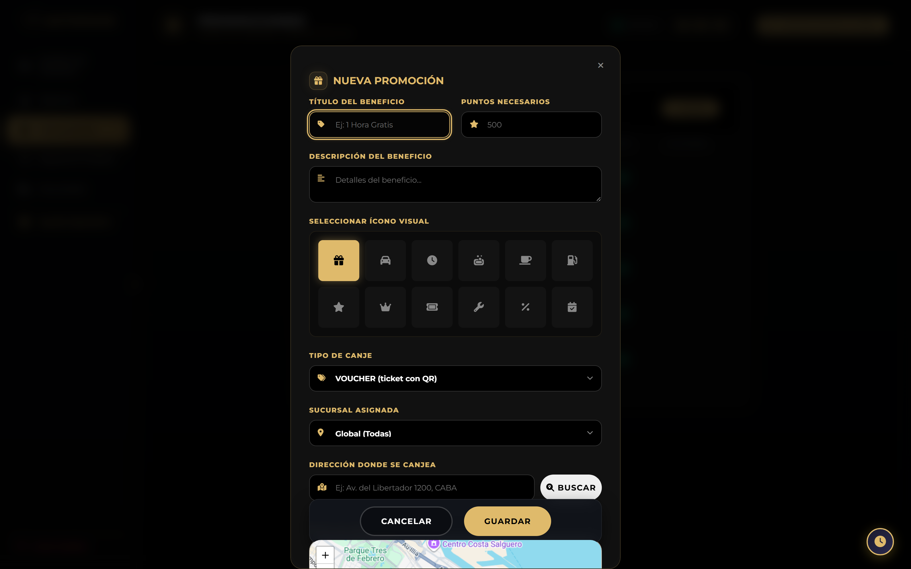
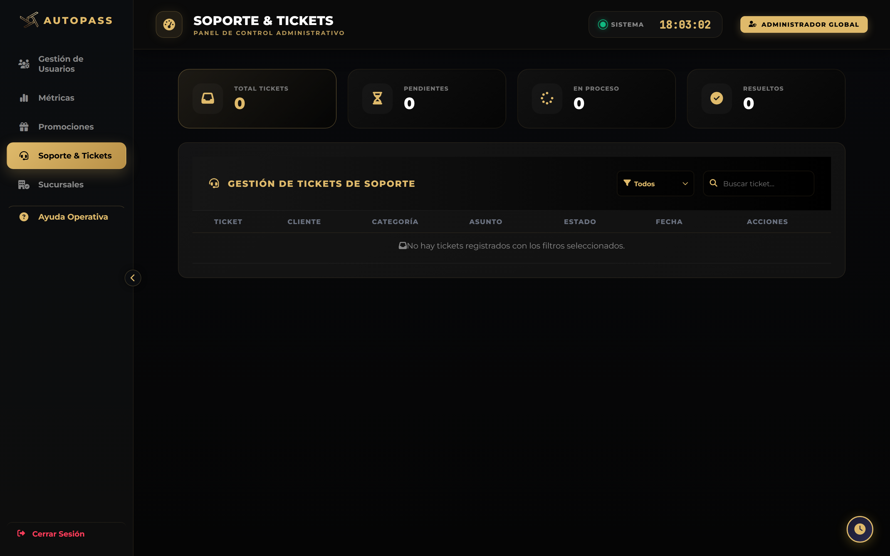
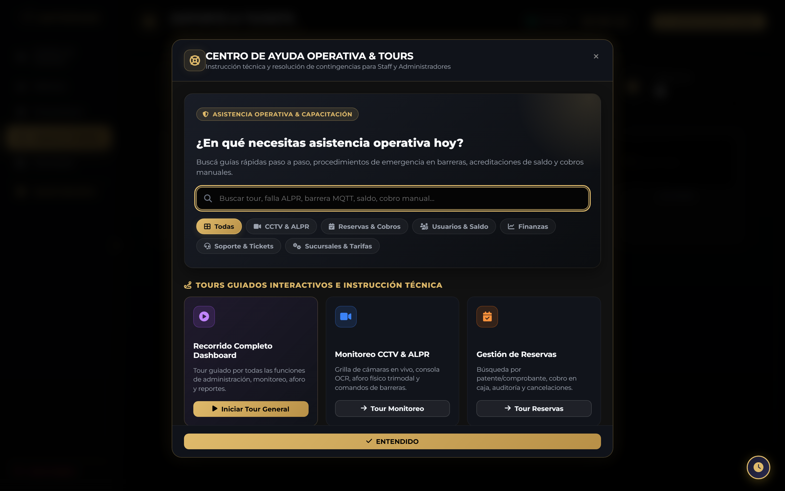

1. Antes de empezar
Este manual es para el administrador general de AUTOPASS. Vos manejás la red completa: sos quien da de alta una sucursal nueva, quien suspende una sede y quien crea las cuentas de los administradores de cada local.
¿Qué puedo y qué no puedo hacer?
El sistema distingue cuatro tipos de cuenta. Todos entran al mismo panel, pero cada una ve solamente las pantallas que le corresponden:
Empleado
Solo monitoreo y reservas de su sucursal. No ve tareas administrativas.
Admin de Sucursal
Todo lo de su sede: usuarios, finanzas, promociones, tickets y configuración.
Admin General (vos)
Administra la red: sucursales y usuarios de toda la organización. Es tu rol.
Lo que ves en Métricas, Promociones y Soporte abarca todas las sucursales de la red, no una sola. En cambio, cada administrador de sucursal ve solamente los datos de su sede.
Las 6 pantallas de tu panel
Tu menú lateral es más corto que el de un administrador de sucursal, y a propósito:
Monitoreo, Reservas, Reporte Financiero y Configuración no aparecen en tu menú. Son pantallas del administrador de sucursal, porque se usan en el día a día de una sede. Si tu rol es correcto y aun así las pedís, es porque te iniciaste sesión con otra cuenta: cerrá sesión y entrá de nuevo.
Cómo entrar al sistema
- Entrá a la página principal de AUTOPASS desde el navegador.
- Hacé clic en el botón INICIAR SESIÓN, en la parte superior derecha.
- Se abre una ventana con un formulario. Escribí tu correo electrónico y tu contraseña.
- Presioná Iniciar sesión. El sistema te lleva directo al panel.

Revisá que las mayúsculas y el teclado estén bien. Si el problema sigue, probá con el enlace de recuperación desde la misma ventana de acceso. Como administrador general no podés restablecer tu propia contraseña desde el panel: eso lo resuelve una persona de soporte del sistema.
Reconocer el menú lateral

Para cambiar de pantalla, hacé clic en el nombre de la sección. La sección activa queda marcada con una franja dorada a la izquierda. Abajo del todo está Cerrar Sesión.
2. Sucursales
Esta es tu sección principal. Es donde nacen las sedes de la red: las creás, les editás los datos, las suspendés si dejan de operar y las das de baja cuando cierran.
Ver la red completa
Al entrar, la tabla lista todas las sucursales de la organización. Cada fila muestra:
| Columna | Qué te dice |
|---|---|
| Sucursal | Su logo y su nombre. |
| Dirección | La calle donde está ubicada. |
| Administrador | Quién tiene el cargo, o Sin asignar. |
| Plazas (A/M) | Te aparece siempre como ---. Ver la nota de abajo. |
| Teléfono | Un número de contacto del local. |
| Horario | El horario de atención, o 24hs. |
| Estado | Un interruptor: activada o suspendida. |
| Acciones | Editar la sucursal o eliminarla. |

La cantidad de lugares disponibles se calcula con los datos del monitoreo de cada sede, algo que ocurre en la playa de la sede. Vos no ves esos números desde acá: los lleva el administrador de esa sucursal, desde Configuración → Plazas. Es normal que te aparezcan tres rayitas.
Crear una sucursal
Hacé clic en Sucursales en el menú lateral y después en el botón NUEVA, arriba a la derecha. Se abre una ventana con dos columnas.

Datos principales
- Nombre de Sucursal. El nombre corto con el que se la conoce, por ejemplo Central.
- Teléfono de Contacto. Un número donde la gente pueda llamar, por ejemplo
0800-444-AUTO. - Dirección. La calle, el número y la localidad, por ejemplo Av. del Libertador 1200, CABA.
Junto al campo de dirección hay un botón con una lupa. Si lo presionás, el sistema busca esa dirección en el mapa y coloca un punto automáticamente. Si la dirección está bien escrita te avisa Ubicación encontrada; si no, te pide que seas más específico.
De todos modos, revisá el punto en el mapa: la búsqueda automática identifica la calle, pero no siempre la puerta exacta. Si está corrido, hacé clic en el lugar correcto para moverlo. La ubicación tiene que ser precisa porque después se usa para los reportes de geolocalización.
Logo y horario
- Logo de la Sucursal. Hacé clic en SUBIR IMAGEN y elegí el archivo. Se muestra una vista previa; con la X la quitás.
- Horario Operativo. Escribí el rango, por ejemplo
07:00 a 23:00. - ¿ABIERTO 24 HS? Si la sede funciona las 24 horas, activá el interruptor: el campo de horario se desactiva solo.
- Presioná GUARDAR SUCURSAL.
Guardar la sede no crea ninguna cuenta. Apenas aparece en la tabla, la columna Administrador va a decir Sin asignar. Tenés que crearle al administrador en Gestión de Usuarios y asignarle esa sucursal, o la sede queda sin nadie a cargo.
Editar una sucursal
- Buscá la fila de la sede que querés cambiar.
- Hacé clic en el ícono del lápiz, en la columna Acciones.
- Se abre la misma ventana de la Alta, pero ahora el título dice EDITAR SUCURSAL y el mapa arranca en la ubicación de esa sede.
- Cambiá lo que necesites y presioná GUARDAR SUCURSAL.
Activar o suspender una sucursal
El interruptor de la columna Estado hace las dos cosas. Cada cambio se aplica al instante y el sistema te confirma con un aviso verde: Sucursal Activada o Sucursal Suspendida.
Suspender es la opción para una sede que dejó de operar de forma temporal, por ejemplo por una reforma. La sucursal queda en la lista, deja de atender y podés reactivarla cuando vuelva, sin volver a cargarla.
Eliminar una sucursal
El ícono de la X roja, en la misma columna de acciones, borra la sede. Antes de hacerlo, el sistema te muestra una confirmación que dice, textualmente:
¿Estás seguro de eliminar esta sucursal? Esto no afectará los registros históricos pero impedirá nuevas operaciones en ella.
O sea: los pagos, las reservas y los tickets que pertenecen a esa sede no se borran, quedan en el historial. Lo que deja de funcionar es la operación: nadie va a poder trabajar ahí.
Si la idea es una pausa y no un cierre, suspendé la sucursal en lugar de eliminarla. Eliminar es definitivo.
3. Gestión de usuarios
Acá manejás todas las cuentas de la organización. El administrador de sucursal solo ve su propia gente; vos ves las de todas las sedes, y sos el único rol que puede crear otro administrador general.
La lista de usuarios
Arriba hay un resumen con cuántas cuentas hay de cada tipo. Debajo, la tabla con una fila por persona:
| Columna | Qué te dice |
|---|---|
| Nombre Completo | Nombre, apellido y DNI. |
| Contacto | Correo electrónico y, si tiene, teléfono. |
| Rol | Cliente, Empleado, Admin Sucursal o Admin General. Si es de una sede, lo aclara al lado. |
| Puntos | Los puntos acumulados por fidelidad. |
| Saldo | El dinero cargado en su cuenta. |
| Acciones | Editar, cambiar contraseña, bloquear o eliminar. |

Buscar y filtrar
- Buscar. Escribí en el campo de texto para filtrar por nombre, DNI o correo. Se actualiza mientras escribís.
- Filtrar por rol. La lista desplegable te deja ver solamente
CLIENTES,EMPLEADOS,ADMIN SUCURSALoADMIN GENERAL. - Recorrer. Si hay muchas filas, usá los botones de página que están debajo.
Crear un usuario
Hacé clic en NUEVO USUARIO. Se abre una ventana con estos campos:

- Nombre y Apellido.
- Correo Electrónico. Es el usuario con el que va a entrar.
- DNI. Sin puntos ni guiones.
- Rol. Elegí uno de los cuatro valores de la lista.
- Contraseña Temporal. Escribí una clave simple para el primer ingreso y comunicala por un canal seguro.
- Sucursal Asignada. Solo aparece si el rol es Empleado o Admin de Sucursal.
- Guardá.
Los cuatro roles
Cliente
Reserva, paga y consulta su saldo. No entra al panel administrativo.
Empleado
Monitoreo y reservas de su sede. Necesitás asignarle una sucursal.
Admin de Sucursal
Administra una sede completa. Necesitás asignarle una sucursal.
Admin General
Administra toda la red. Sin sucursal asignada.
Crear una cuenta con ese rol es una decisión exclusiva tuya: el administrador de sucursal no puede hacerlo. Antes de dar de alta a otro administrador general, pensá si de verdad hace falta, porque esa persona va a poder dar de alta y borrar sucursales de toda la organización.
Las acciones sobre un usuario
| Acción | Para qué sirve |
|---|---|
| Editar Información | Corregir nombre, correo, DNI, teléfono, cambiar el rol o reasignar la sucursal. |
| Cambiar Contraseña | Establecer una clave nueva, por ejemplo si alguien la olvidó. |
| Bloquear | Impide el ingreso sin borrar la cuenta ni su historial. Sirve para una baja temporal o una investigación. |
| Eliminar | Borra la cuenta. Para casos puntuales: si solo necesitás que no entre, usá Bloquear. |
Crear al administrador de una sucursal nueva
Es el procedimiento que más vas a repetir. Son dos pasos, en este orden:
- Primero creá la sucursal en la sección Sucursales. Necesitás el nombre exacto para poder seleccionarla después.
- Después creá el usuario en esta sección, con rol Admin de Sucursal y la sucursal recién creada en Sucursal Asignada.
- Volvé a Sucursales: la columna Administrador ya muestra el nombre de la persona.
La lista de sucursales que aparece en el formulario se arma con las sedes que ya existen. Si intentás asignarle una sede a alguien y todavía no la creaste, no la vas a encontrar en la lista.
4. Métricas
Indicadores de uso del sistema. A diferencia del administrador de sucursal, que los ve filtrados por su sede, vos los ves consolidados de toda la red.

Qué muestran
- Actividad de accesos. Cuánta gente entrou al panel y desde qué roles.
- Uso por sucursal. Qué sede tiene más movimiento.
- Evolución en el tiempo. Permiten alternar entre el pasado y el presente.
Un número alto no siempre es una buena noticia: si la ocupación de una sede roza el límite, ese es el lugar donde conviene sumar capacidad. Usá las métricas para decidir dónde abrir la próxima sucursal y dónde reinforce una que ya está al límite.
5. Promociones
Campañas y beneficios que se otorgan a los clientes. Lo que definís acá se aplica a toda la red, no a una sede en particular.

Crear una promoción
- Entrá a Promociones.
- Hacé clic en NUEVA.
- Completá el nombre de la campaña y las fechas de inicio y fin.
- Elegí qué recompensa otorga y con cuántos puntos se canjea.
- Guardá.

El canje descuenta puntos de la cuenta del cliente en el momento de aplicarlo. Si el valor queda muy por debajo de lo que cuesta la recompensa, la promoción se va a consumir sola. Probala con un número redondo y ajustalo una vez que veas el movimiento.
6. Soporte y tickets
Las consultas y los problemas que envían los clientes. Ves los tickets de todas las sucursales: los que resuelve el administrador de una sede y los que quedan sin resolver.

Los cuatro estados
| Estado | Qué significa |
|---|---|
| Abierto | Nuevo, todavía sin respuesta. |
| En proceso | Alguien lo está tomando. |
| Resuelto | Cerrado. La conversación queda bloqueada. |
| Cerrado | Archivado. |
Responder un ticket
- Buscá el que te interese y abrilo.
- Escribí la respuesta en el cuadro de texto.
- Elegí el estado nuevo: normalmente En proceso mientras lo trabajás y Resuelto cuando terminates.
- Guardá el mensaje.
Cuando el ticket pasa a Resuelto el hilo queda bloqueado y no se pueden escribir mensajes nuevos. Si el cliente vuelve a tener el mismo problema, creá un ticket nuevo y citá el número del anterior.
7. Ayuda operativa
El centro de ayuda del panel, con recorridos guiados de las pantallas.

Hacé clic en Ayuda Operativa, en la parte de abajo del menú lateral. Desde ahí se abre el recorrido con las explicaciones de cada sección.
Esta es la ayuda dentro del sistema. El manual que estás leyendo es el complemento: alcanza los casos que el recorrido no explica.
8. Problemas frecuentes
Las consultas que más se repiten, con la respuesta corta.
No me aparece una sección del menú
Revisá que hayas entrado con la cuenta de administrador general. A ese rol no le aparecen Monitoreo, Reservas, Reporte Financiero ni Configuración: es lo esperado.
Una sucursal nueva dice “Sin asignar”
Todavía no creaste al administrador de esa sede. Andá a Gestión de Usuarios, creá el usuario con rol Admin de Sucursal y asignale esa sucursal.
No encuentro la sucursal en la lista para asignarla
La lista se arma con las sedes existentes. Creá primero la sucursal y después asignala; si ya existe, revisá que el nombre sea el correcto.
La columna Plazas muestra tres rayitas
Es normal para tu rol. La ocupación se calcula con el monitoreo de cada sede y la lleva el administrador de esa sucursal.
El mapa no encuentra la dirección
Sumá localidad y provincia, y separá el número con una coma. Si sigue sin encontrar, ubicá el punto a mano haciendo clic en el mapa.
¿Suspendo o elimino una sucursal?
Si la pausa es temporal, suspendé: la sede queda en la lista y la podés reactivar. Eliminar es definitivo y solo corresponde a un cierre.
Un usuario se olvidó la contraseña
Entrá a Gestión de Usuarios, ubicá su fila y usá Cambiar Contraseña. Para tu propia cuenta de administrador general, pedí el restablecimiento a soporte del sistema.
¿Bloqueo o elimino a un usuario?
Bloquear impide el ingreso y conserva el historial; es la opción habitual. Eliminar borra la cuenta y solo corresponde a casos puntuales.
No puedo escribir en un ticket resuelto
Los tickets resueltos quedan bloqueados. Creá uno nuevo y citá el número del anterior.
Los gráficos se ven vacíos
Probablemente estés mirando un período sin movimiento. Revisá el filtro de fechas y volvé a la vista en vivo o elegí el día de hoy.
La aplicación se ve desactualizada
Recargá la página completa con F5. Si el problema sigue, probá con una
ventana de incógnito: a veces queda una sesión vieja cacheada en el navegador.